A little closer to the forest.
Original and upgraded views at 1440 × 900, DPR 1, captured in headless Chromium with SwiftShader. Offline software rendering is slower than a GPU and shows each effect at a single moment. Verification notes
Daylight
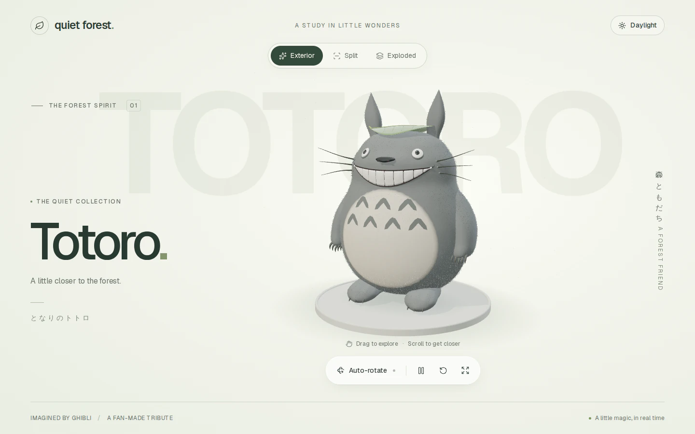
Before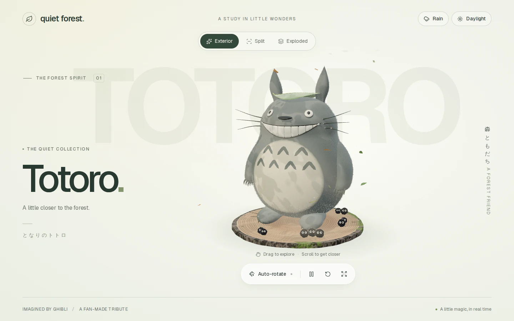
After: komorebi light, camphor plinth, leaves, dust and soot spritesMoonlight
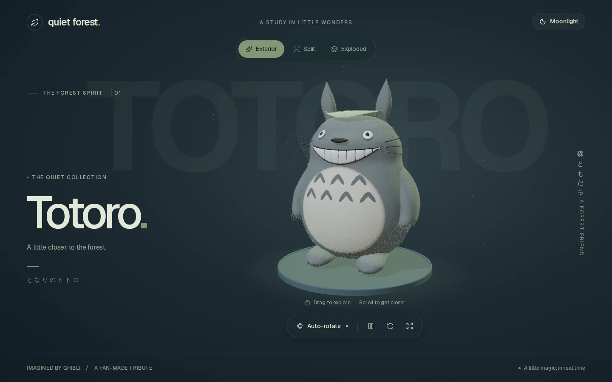
Before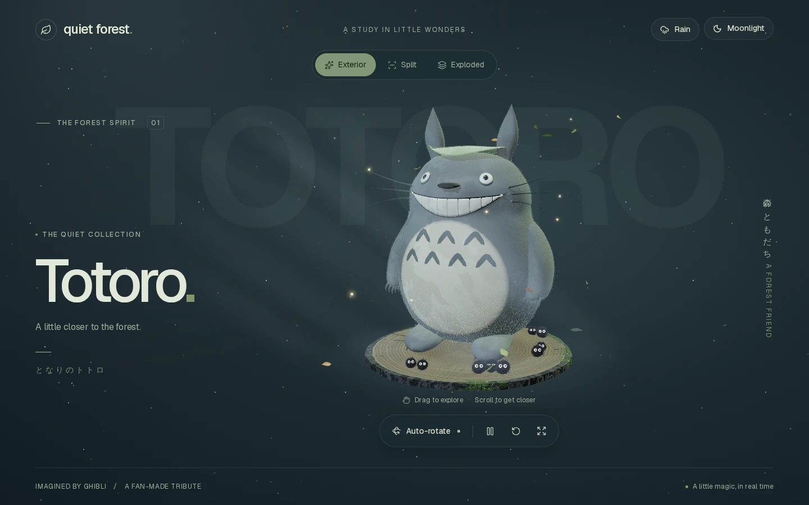
After: stars, moonbeams, fireflies that light the fur, glowing mossRain
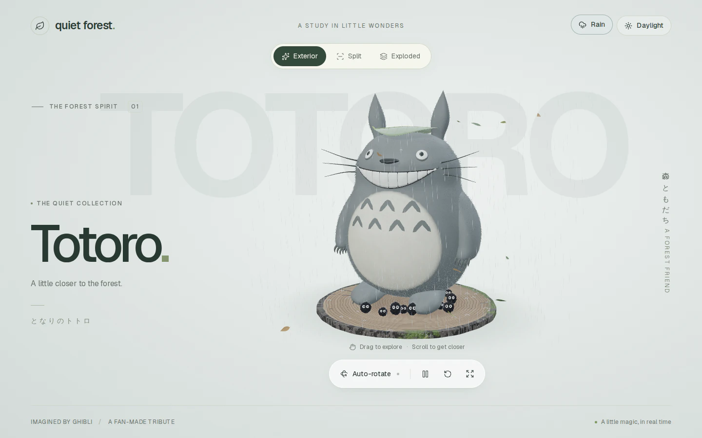
New: a daytime shower with wet wood, ripples and sheltering soot sprites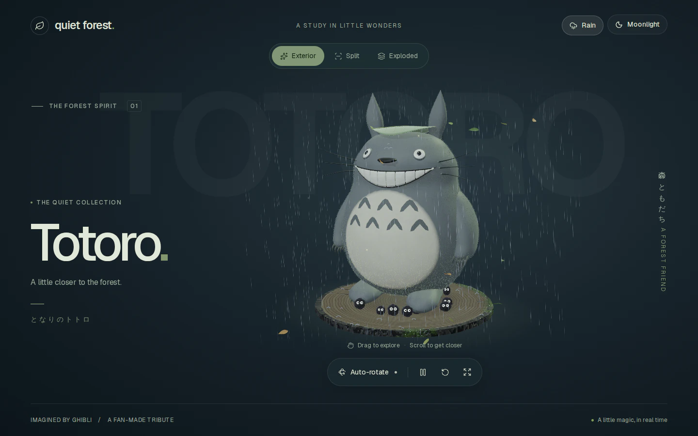
New: rain by moonlightDetails
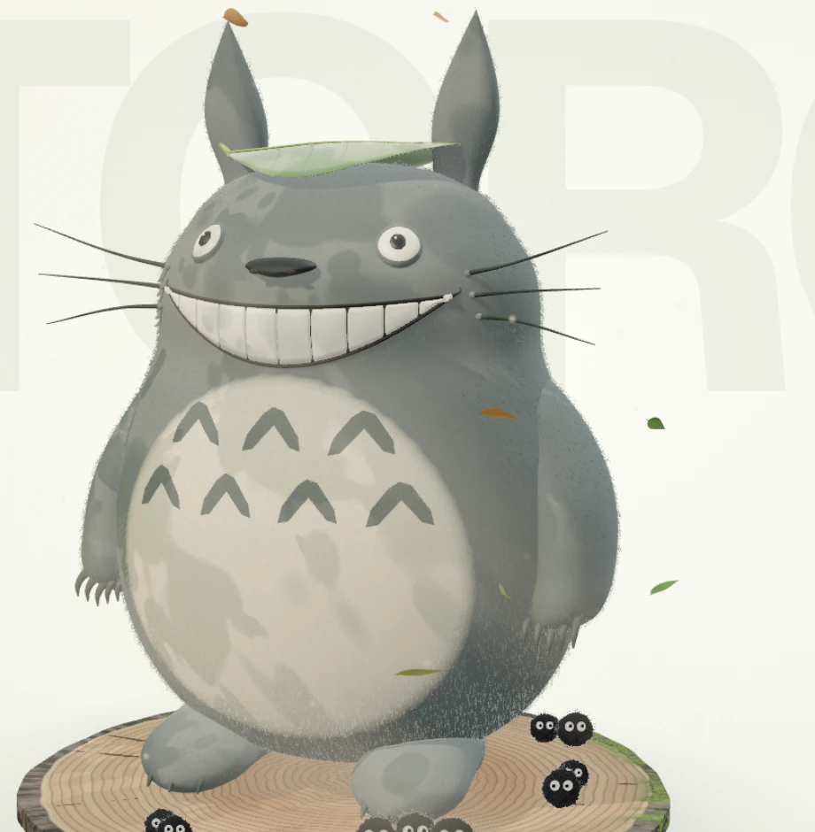
Leaf light on the fur and end grain (DPR 2)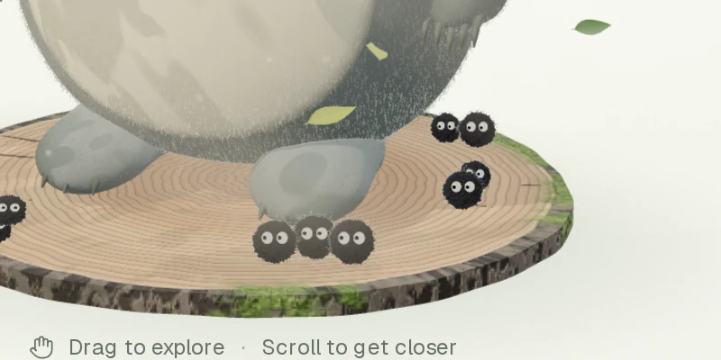
Soot sprites at Totoro's feet (DPR 2)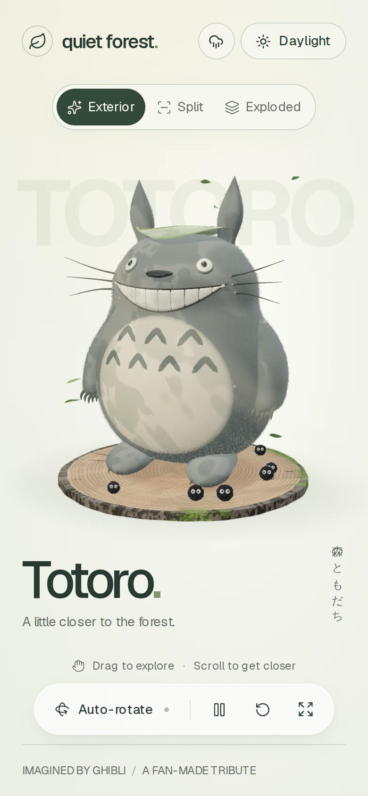
390 × 844 at DPR 2Split
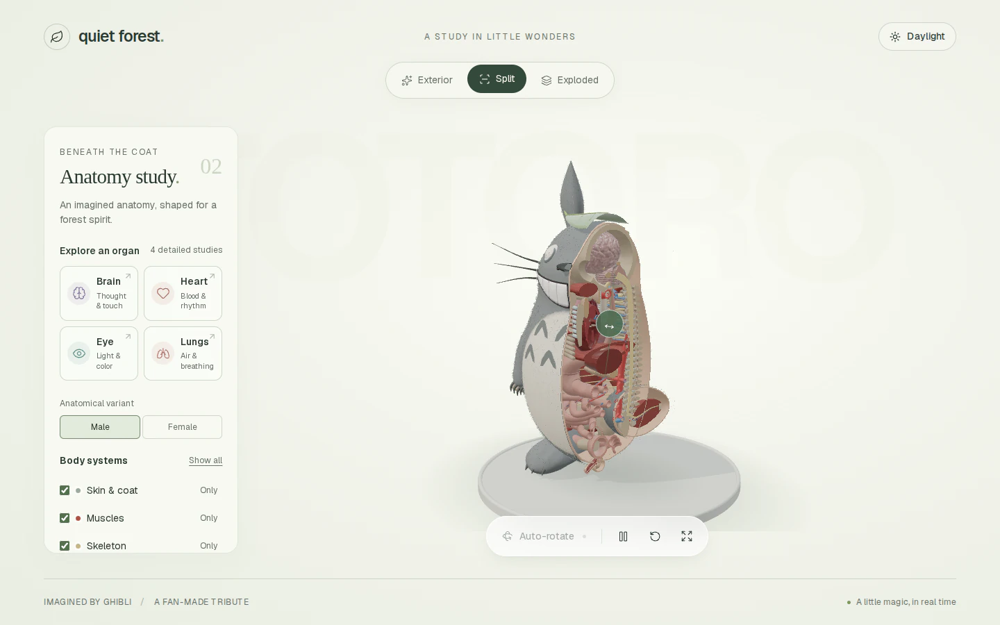
Before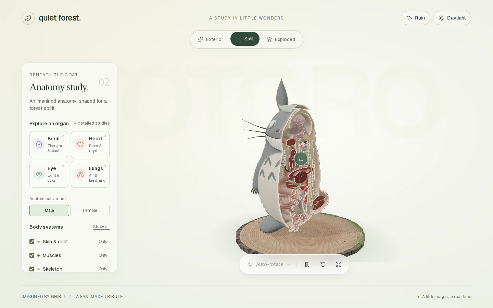
After: lit section rims and moist section caps through the HDR pipelineBrain study
BeforeAfter: bloom, grade and vignette